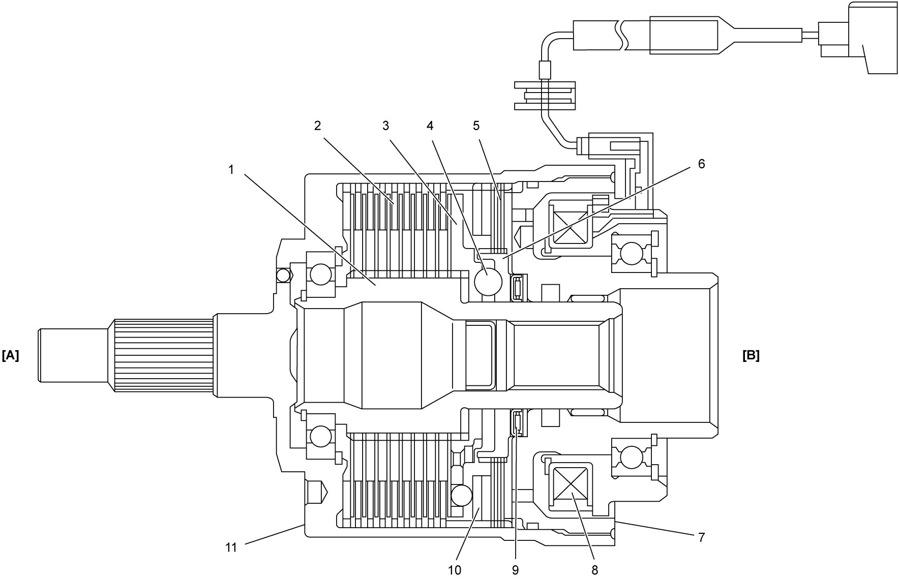
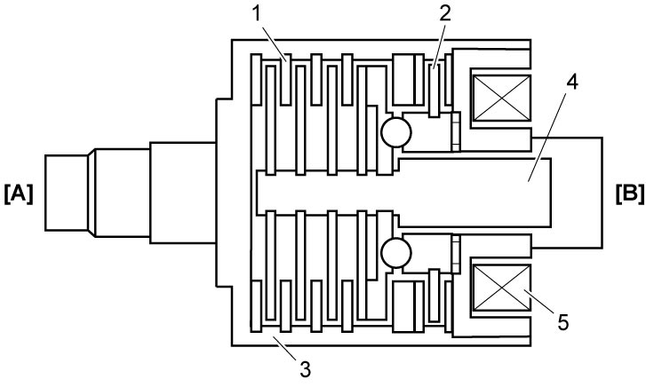
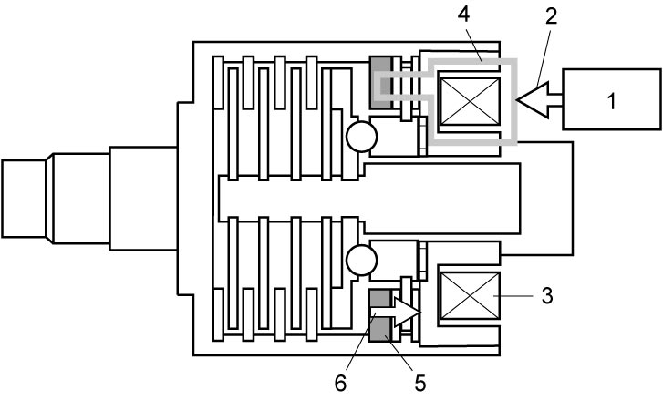
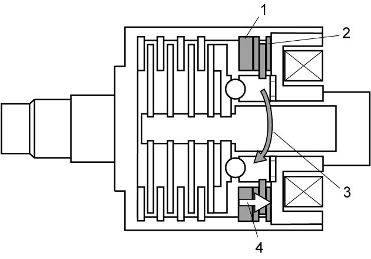
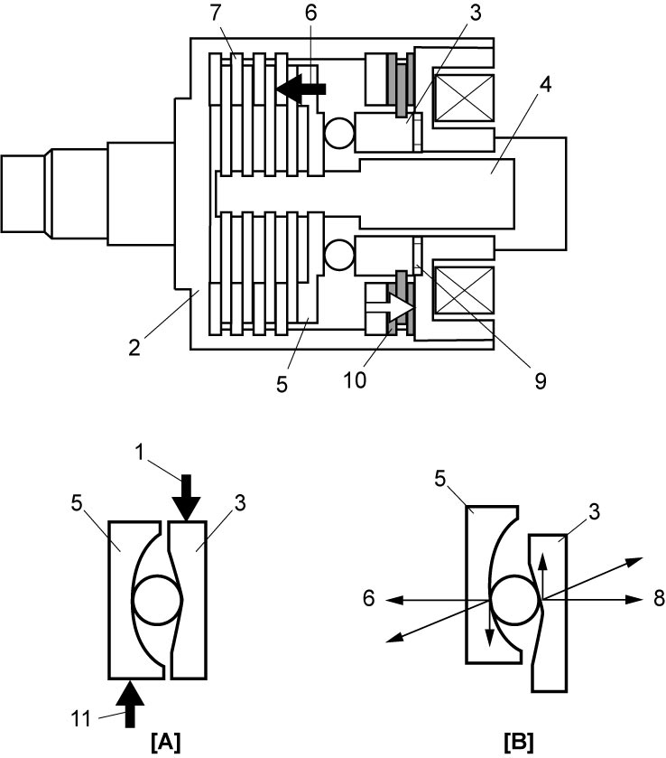
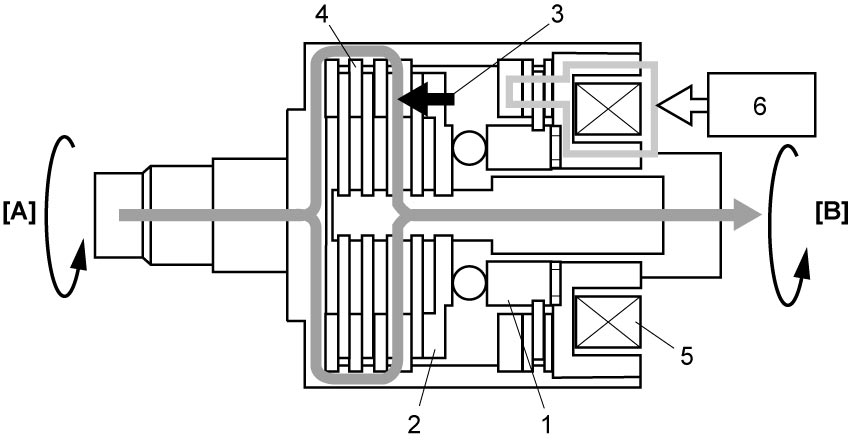

3B
| Description of 4WD Control System Component Function |
Rear Drive Coupling Unit
Rear drive coupling unit is installed in front of rear differential and transmits driving force to rear wheels corresponding to electric current controlled by 4WD control module.
Construction

 "Expand image")
| [A]: | Transfer side | 4. | Ball | 9. | Thrust bearing |
| [B]: | Rear differential side | 5. | Control clutch | 10. | Armature |
| 1. | Shaft | 6. | Control cam | 11. | Front housing |
| 2. | Main clutch | 7. | Rear housing | ||
| 3. | Main cam | 8. | Electromagnetic coil |
Operation
1)When driving force of rear wheels is not necessary, no electric current is applied to electromagnetic coil (5) and main clutch (1) and control clutch (2) are not engaged. Thus, front housing (3) and shaft (4) are free from each other and power from transfer is not transmitted to rear differential.


 "Expand image")
| [A]: | Transfer side | [B]: | Rear differential side |
2)When 4WD control module (1) judges necessity of rear wheel driving force based on driving conditions, appropriate electric current (2) is applied to electromagnetic coil (3). The electric current flow in electromagnetic coil creates magnetic field (4) in magnetic path thus armature (5) is pulled to electromagnetic coil side.

 "Expand image")
| 6. | Pull-in force |
3)Control clutch (2) is pressed by armature (1) and control torque (3) is created in control clutch. The control torque is controlled changing electric current flow.

 "Expand image")
| 4. | Pull-in force |
4)Rotating force of front housing (2) is transmitted to control cam (3) and creates control torque (1), and the control torque generates rotational angle difference between control cam and main cam (5) which is combined with shaft (4). This rotational angle difference brings control cam – main cam distance to extend by ball, thereby causing thrust power (6) to create. Due to the created thrust power, control cam – main cam is separated more, therefore main cam moves to the front side (in thrust direction), which creates the main clutch (7) to engage. On the other hand, control cam does not move to the rear side because reaction force of the thrust power (8) is held by thrust bearing (9) and the force is canceled. Thus, control clutch (10) functions to create accurate thrust power in proportion to control torque, electric current supplied from 4WD control module.

 "Expand image")
| [A]: | Not engaged | 11. | Reaction force of control torque |
| [B]: | Engaged |
5)Main clutch (4) is pressed by thrust power (3) which is converted between control cam (1) and main cam (2), and front driving torque is transmitted to rear differential thus 4WD is set. Further, electric current control for electromagnetic coil (5) optimizes rear wheel driving force.

 "Expand image")
| [A]: | Transfer side | 6. | 4WD control module |
| [B]: | Rear differential side |
4WD Control Module
Based on the signals from ECM, TCM (A/T model or twin clutch system model), BCM, ESP® control module, steering angle sensor via CAN communication and signals from rear drive coupling air temperature sensor, transfer oil temperature sensor, 4WD control module controls electric current to rear drive coupling unit and has self-diagnosis function to detect abnormal condition in 4WD control system.
Driving Mode Switch
Driving mode switch is installed on center console to change driving mode to AUTO, SPORT, SNOW or LOCK. Driving mode switch signal is inputted to BCM and transmitted to each control module via CAN communication.
Rear Drive Coupling Air Temperature Sensor
This sensor is mounted on rear differential carrier and detects air temperature in rear drive coupling unit.
Transfer Oil Temperature Sensor
This sensor is mounted on transfer left case and detects actual transfer oil temperature.
Combination Meter
4WD warning light
The 4WD warning light operates as follows:
•Comes on for 2 seconds with ignition “ON”.
•Comes on when the system is malfunctioning to warn the driver.
•Blinks when a tire diameter is different from the others while protective control is working to warn the driver.
•Blinks when the rear drive coupling unit is overheated due to overload driving or transfer oil temperature exceeds the upper limit while protective control for oil temperature is working to warn the driver.
•Comes on when the system is malfunctioning to warn the driver.
•Blinks when a tire diameter is different from the others while protective control is working to warn the driver.
•Blinks when the rear drive coupling unit is overheated due to overload driving or transfer oil temperature exceeds the upper limit while protective control for oil temperature is working to warn the driver.
Information display
The information display indicates:
•Current driving mode.
•Message of system malfunction or working of protective control for 4WD system.
•Message of system malfunction or working of protective control for 4WD system.
Information display messages of 4WD control system
| Message | Condition |
|---|---|
| AUTO / SPORT / SNOW MUD / LOCK | Current driving mode |
| SERVICE 4WD SYSTEM | Malfunctioning of 4WD control system |
| 4WD SYSTEM HIGH TEMP 4WD IS OFF |
•While rear wheels are stopping and front wheel(s) is spinning for a specified period of time.
•While driving, revolution difference between rear wheels and front wheels occurred for a long time. •While driving, transfer oil temperature or rear drive coupling air temperature becomes higher than specified value. |
| UNEVEN TIRE SIZE 4WD IS OFF |
When driving on different diameter tire(s) for a specified period of time. |
| 4WD MODE UNSELECTABLE AUTO MODE ON |
When BCM receives driving mode select control disabled signal from ECM, TCM (A/T model or twin clutch system model), ESP® control module, P/S control module or 4WD control module. |
| LOCK MODE CANNOT BE SET | When LOCK mode is selected while vehicle speed is 60 km/h (37 mile/h) or higher. |
| NOT LOCKABLE SET TO SNOW MODE FIRST |
When driving mode is changed to LOCK from other mode than SNOW. |